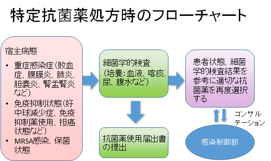
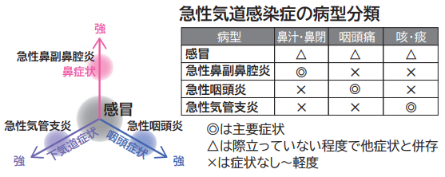
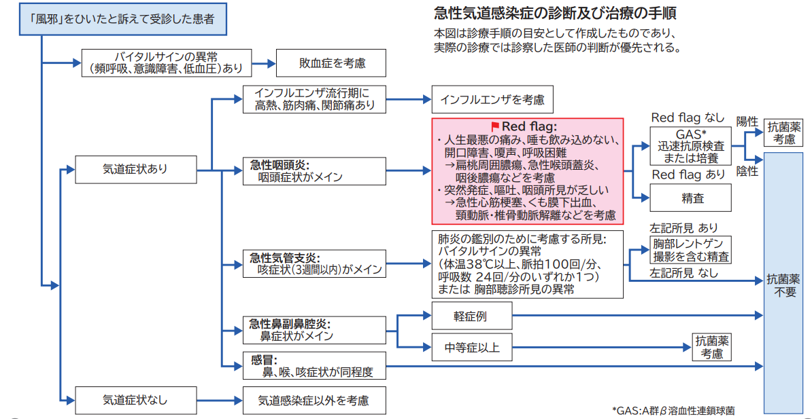
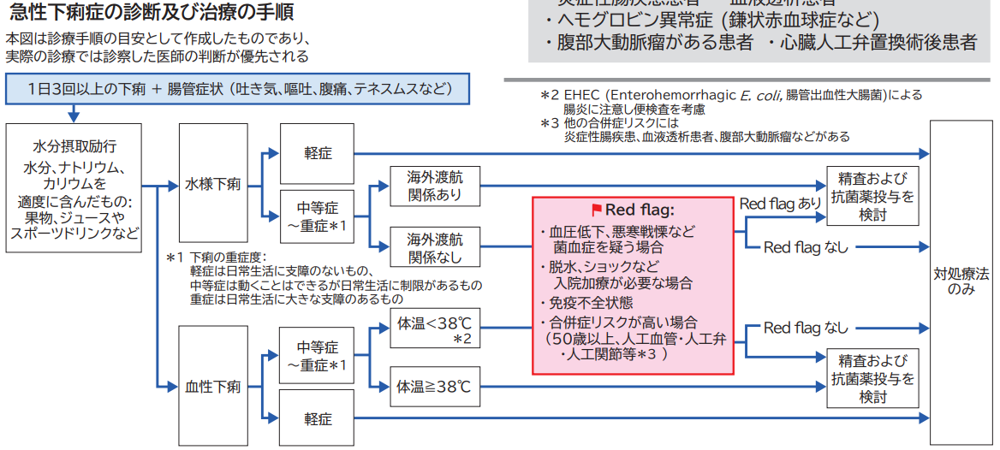

Ⅹ.抗菌薬適正使用指針
- 抗菌薬の選択基準
抗菌薬は、
1.推定あるいは同定された原因微生物の種類
2.薬剤感受性
3.臓器移行性
4.細胞内移行性（細胞内増殖菌）
5.患者重症度（感染症、基礎疾患）
6.患者臓器障害（腎機能障害、肝機能障害）
7.既往歴（薬物アレルギー）
8.コスト
などを考慮して選択する。
また抗菌薬治療に関して以下の点に注意が必要である。
- 広域抗菌薬の多用は患者体内外の環境中の耐性菌の頻度を増加させる
広域抗菌薬の多用は、宿主環境や病院環境における耐性菌の増加を誘導し、次に起こる感染症をより難治なものにする。
- 投与期間
感染症に対する抗菌薬の投与は、臓器特異的な判断を行ったうえで決定する。（骨髄炎や心内膜炎等は長期投与が必要である）
また抗菌薬の投与量は、患者状態にあわせて、充分量で用いることが望ましい。
抗菌薬低感受性あるいは耐性菌の場合、短期間（1週間程度）での抗菌薬の中止は再発の可能性がある。
- 投与量、投与回数
抗菌薬の投与量と投与回数については薬物動態を考慮して決定する。
薬剤感受性試験の結果が判明している場合、目的とする臓器に移行のよい感受性（S）の抗菌薬を選択し、充分量の投与を行う。投与回数はPK-PD理論に基づき、一般的に効果が時間依存性のβ-ラクタム系（ペニシリン、セフェム、カルバペネム）は投与回数を増やすほうがより高い効果を期待できる。また、濃度依存性のキノロン系、アミノ配糖体系は、1回の投与量を増加させるほうが有効とされる。
PK-PD
PK-PDとは、生体内で薬剤がどれだけ有効に利用され、また作用しているかを考えた概念
PK(pharmacokinetics)：生体内における薬物動態(吸収、分布、代謝、排泄など)
PD(pharmacodynamics)：生体内における薬物の作用
PK-PDからみた抗菌活性
タイプ | 時間依存性 | 濃度依存性 | 時間依存性＋PAE※ |
薬剤 | βラクタム薬 マクロライド(AZM除く) | ニューキノロン アミノグリコシド | アジスロマイシン テトラサイクリン |
評価項目 | Time above MIC (MICを超える血清中濃度が維持) | AUC/MIC90 (free-AUC/MIC90と特に相関する) | |
※PAE(Post-antibiotic effect)
：抗菌薬が細菌と短時間接触した後、菌の増殖抑制効果が持続する現状
Cmax（peak）
MIC
AUC
time above MIC
血中濃度
時 間
- 耐性菌の出現を注意する必要のある抗菌薬
できるだけ使用を制限する抗菌薬
広域抗菌薬、あるいは特殊な耐性菌に対して切り札的に用いられる薬剤は、その薬剤に対する耐性菌が出現した場合、次に選択する抗菌薬が限られたものになることから、その使用を制限することが望ましい。
- 特定抗菌薬：初回処方時に使用届出書の提出が必要
カルバペネム系：メロペネム、ドリペネム、イミペネム/シラスタチン、
イミペネム/レレバクタム/シラスタチン
β-ラクタマーゼ阻害剤配合薬：タゾバクタム/ピペラシリン
抗MRSA薬：バンコマイシン、テイコプラニン、アルベカシン、リネゾリド、
ダプトマイシン、テジゾリド
※メロペネム・ドリペネム・タゾバクタム/ピペラシリン・抗MRSA薬に関しては
7日間以上継続的に使用している症例を対象として前向き監査とフィードバック
（カルテで抗菌薬選択、投与期間、投与量などの妥当性を確認し、必要に応じて、
主治医に中止や薬剤変更の提案する）を行う。
- その他広域抗菌薬
第4世代セファロスポリン系：セフェピム
キノロン系：シプロフロキサシン、レボフロキサシン
- 特殊な耐性菌に対して用いる薬剤（薬剤耐性菌感染症治療薬）
グリシルサイクリン系：チゲサイクリン
ポリペプチド系：コリスチン
セフェム系：セフトロザン/タゾバクタム、セフィデロコル
カルバペネム系薬：イミペネム/レレバクタム/シラスタチン
※薬剤耐性菌感染症治療薬を使用する際は、感染症内科が併診することを条件とする。原則として主治医から感染症科へ併診依頼するが、薬剤部が併診依頼がないことを確認した場合、ASTへ連絡し、ASTから主治医に連絡し、併診を促す。
上記薬剤の使用に関しては、原則として原因病原体と診断された細菌に対し、投与することで有効性が期待される場合に限り使用する。
- 抗菌薬選択の具体的指針
- 発熱時の抗菌薬の選択
- 抗菌薬選択の具体的指針
まずは、発熱に対する鑑別（感染症、悪性新生物、薬剤アレルギー*、膠原病など）を優先して行うべきである。
患者状態（術後、カテーテル挿入、免疫抑制状態）によっては経験的抗菌薬の投与が行われることもある。その場合は、血液、喀痰（抗酸菌含む）、尿、ドレナージ液等、細菌検査用の検体を抗菌薬投与前に必ず採取する。
血液培養は感染症診断の基本であり、発熱時、十分な皮膚の消毒とともに複数個所あるいは複数回数培養用に採取を行う。複数個所、あるいは複数回数行うのは、常在菌による汚染を鑑別するためである。
＊薬剤熱
薬剤アレルギーは当院の感染症コンサルテーションでしばしば経験する発熱原因である。
「発熱のないときの患者状態が比較的良好である」ときは使用している薬剤の履歴を調べ、疑わしい薬剤の中止を考慮する。
- 予防的抗菌薬投与の原則
手術などの診療行為に際して予防的な抗菌薬の投与が行われる。予防的な抗菌薬の投与は治療と異なるため、抗菌薬の選択、投与期間についての注意が必要である。
- 術後感染予防
術後感染予防の考え方は、術中に細菌感染が外因性あるいは内因性に起こることを予防することである。外因性の感染症は皮膚の常在菌や、汚染手術の場合には消化管内の細菌などが原因菌となる。そのため、清潔、準清潔手術の場合、目的とする細菌は表皮の常在細菌であるグラム陽性菌が対象となり、第1世代セファロスポリン系が適切である。消化管内容物による汚染の可能性がある手術では、グラム陰性腸内細菌を対象として、第2世代セファロスポリン、あるいは嫌気性菌もあわせて、セファマイシン系が適切である。
内因性のbacterial translocationの対策として、MRSA保菌者の手術で、心臓血管外科や整形外科的手術、長時間の手術では、バンコマイシンの術中投与も考慮してよい。
手術が始まる時点で、十分な殺菌作用を示す血中濃度、組織中濃度が必要であり、切開の1時間前以内に投与を開始する。バンコマイシンとキノロン系薬は2時間前以内に投与を開始する。また、長時間手術の場合には術中の追加再投与が必要である。一般的に半減期の2倍の間隔での再投与が望ましい。
術後の予防的抗菌薬の投与期間は術後24～48時間以内とする。その間に発熱が持続あるいは増悪すれば、予防的な抗菌薬が無効であるので、治療的な抗菌薬投与に変更すべきである。治療的な抗菌薬投与は、原因微生物の同定が必要であり、適切な検体の採取が有効な治療成績のために必要条件となる。
- 観血的検査後の投与（歯科治療を含む）
手術に比較すれば、感染率は低いため、通常は予防投薬の適応にならない。観血的な検査においても手術と同じ原理が適応される。清潔な検査であるので抗菌薬の投与は推奨されておらず、投与する場合でも長期の抗菌薬投与は不要である。必要と判断された場合には、検査前の抗菌薬の投与が適切に行われるべきであるが、検査前に絶飲食となる場合には検査前の投与は適さない。注射薬であれば検査直前に投与する。投与回数は単回とし、複数回の投与は不要である。経口薬の投与は単回あるいは24時間以内が適切である。皮膚切開や穿刺の場合には、抗菌薬は皮膚の常在菌を目的とし、ペニシリン系、第1世代セファロスポリン系などが適切である。
心臓の弁膜症、人工弁置換後、先天性心疾患、肥大型心筋症などでは特に心内膜炎の予防のために抗菌薬の投与が必要であり、特に歯科治療の場合は口腔内のレンサ球菌を対象として、ペニシリン系やマクロライド系が適切である。
- 治療としての抗菌薬投与の原則
感染症と判断された場合、有効な抗菌薬を選択し投与する。初期治療では原因微生物の培養、同定、薬剤感受性検査等は行われていない場合がほとんどであり、通常経験的な治療が行われる。この場合、患者状態が重篤である場合には疑われる微生物を網羅的にカバーする抗菌薬が単剤あるいは併用で選択される。2～3日後に培養結果が判明した場合、薬剤感受性結果をもとに、臓器移行性を考慮して、抗菌薬を選択（de-escalation）する。
効果判定は3日目に行い、有効である場合、細菌学的検査結果と照合し、抗菌薬の継続、変更を判断する。効果が見られない場合、細菌学的検査を繰り返し、抗菌薬の変更、追加を行う。
- 初期抗菌薬選択
最初に、感染性か、非感染性かの鑑別を行い、感染性の可能性が高い場合には、次に細菌性か非定型病原体（マイコプラズマ、クラミジア、レジオネラ、ウイルス、PCP）あるいは真菌の鑑別を行う。たとえば院内肺炎では、入院早期（5日以内）であれば上記非定型病原体のうちマイコプラズマやクラミジアも考慮されるが、通常院内肺炎ではこれらの市中肺炎の非定型病原体は少ない。また、入院期間が長くなると、グラム陰性桿菌による感染症が増加してくる。さらに免疫抑制状態ではサイトメガロウイルス、PCP、アスペルギルスなどの微生物による肺炎、感染症も考慮する。菌血症、敗血症は耐性グラム陽性菌やグラム陰性非発酵菌が分離されやすい。
寝たきり、脳神経障害、胸腹部手術後などの病態では、誤嚥性肺炎が起こりやすい。
細菌性肺炎のエンピリック初期治療（培養結果が判明する前の選択）
誤嚥性肺炎を疑う場合
抗菌薬の前投与がない場合：β-ラクタマーゼ阻害剤配合ペニシリン系
原因微生物不明の院内肺炎、感染症
- 基礎疾患が重篤でなく、感染症が軽症～中等症：β-ラクタマーゼ阻害剤配合ペニシリン系
- 基礎疾患が重篤あるいは感染症が重症：第4世代セファロスポリン系もしくはカルバペネム系に、肺炎が重症の場合はレジオネラ肺炎を否定できないのでキノロン系を併用あるいは単剤投与する。
- 薬物アレルギー
薬物アレルギーの既往でβ‐ラクタム系が使用できない場合：クリンダマイシンあるいはメトロニダゾールとアミノ配糖体系の併用、あるいはモノバクタム系、キノロン系と併用する。
- 原因菌別抗菌薬選択
以下に、一般的な細菌に対する抗菌薬の選択例を示す。
＜経口薬＞
肺炎球菌性肺炎
尿中抗原、グラム染色などの迅速診断が有用。
ペニシリン系経口抗菌薬（高用量が望ましい＊）
＊例：アモキシシリン 1.5g～2g
レスピラトリーキノロン：モキシフロキサシン、ガレノキサシン、シタフロキサシン、レボフロキサシン
インフルエンザ菌
グラム染色による迅速診断が有用。
β－ラクタマーゼ阻害剤配合ペニシリン系経口抗菌薬
第2、3世代セファロスポリン系経口抗菌薬
キノロン系経口抗菌薬
クレブシエラ
グラム染色による迅速診断が有用。
β－ラクタマーゼ阻害剤配合ペニシリン系経口抗菌薬
第2、3世代セファロスポリン系経口抗菌薬
キノロン系経口抗菌薬
黄色ブドウ球菌
グラム染色による迅速診断が有用。MRSAの場合、好中球による貪食像の確認はMRSA定着菌と原因菌との診断に有用。
β－ラクタマーゼ非産生株：ペニシリン系経口抗菌薬
β－ラクタマーゼ産生株：β－ラクタマーゼ阻害剤配合ペニシリン系経口抗菌薬
MRSA：ST合剤、リネゾリド、テジゾリド、ミノサイクリン
モラクセラ・カタラーリス
グラム染色による迅速診断が有用。
マクロライド系経口抗菌薬
β－ラクタマーゼ阻害剤配合ペニシリン系経口抗菌薬
レンサ球菌（肺炎球菌以外）
グラム染色による迅速診断が有用であり、特に貪食像の確認が常在菌との鑑別に有用。
ペニシリン系経口抗菌薬
マクロライド系経口抗菌薬
緑膿菌
グラム染色による迅速診断が有用。
治療開始はキノロン系経口抗菌薬。感受性判明後は感受性結果をみて抗菌薬を選択する。
嫌気性菌
グラム染色による迅速診断が有用。
ペニシリン系経口抗菌薬
β－ラクタマーゼ阻害剤配合ペニシリン系経口抗菌薬
メトロニダゾール
レジオネラ
一部の血清群では尿中抗原を用いた診断が有用
キノロン系経口抗菌薬
マクロライド系経口抗菌薬
＜注射薬＞
肺炎球菌性肺炎
ペニシリン系注射用抗菌薬（高用量が望ましい）
第3世代セファロスポリン系注射用抗菌薬
カルバペネム系注射用抗菌薬
グリコペプチド系注射用抗菌薬＊
＊バンコマイシンはペニシリン耐性肺炎球菌に保険適応あり
インフルエンザ菌
ピペラシリン
β－ラクタマーゼ阻害剤配合ペニシリン系注射用抗菌薬
第2、3世代セファロスポリン系注射用抗菌薬
また、中等症以上では、キノロン系あるいはカルバペネム系注射用抗菌薬も有用
クレブシエラ
β－ラクタマーゼ阻害剤配合ペニシリン系注射用抗菌薬
第2、3世代セファロスポリン系注射用抗菌薬
また、中等症以上では、カルバペネム系あるいはキノロン系注射用抗菌薬も有用
黄色ブドウ球菌
β－ラクタマーゼ非産生株：ペニシリン系注射用抗菌薬
β－ラクタマーゼ産生株：β－ラクタマーゼ阻害剤配合ペニシリン系注射用抗菌薬
第1世代セファロスポリン系注射用抗菌薬
MRSA：グリコペプチド系注射用抗菌薬、アルベカシン、ST合剤、ミノサイクリン、リネゾリド、ダプトマイシン、テジゾリド （感受性を確認のうえ選択する）
モラクセラ・カタラーリス
β－ラクタマーゼ阻害剤配合ペニシリン系注射用抗菌薬
第2、3世代セファロスポリン系注射用抗菌薬
レンサ球菌（肺炎球菌以外）
ペニシリン系注射用抗菌薬
緑膿菌
抗緑膿菌性ペニシリン系注射用抗菌薬
抗緑膿菌性第3、4世代セファロスポリン系注射用抗菌薬
カルバペネム系注射用抗菌薬
キノロン系注射用抗菌薬
嫌気性菌
ペニシリン系注射用抗菌薬
クリンダマイシン
β－ラクタマーゼ阻害剤配合ペニシリン系注射用抗菌薬
カルバペネム系注射用抗菌薬
メトロニダゾール
レジオネラ
レジオネラ肺炎と診断できれば、急速な病態の進行を考慮して、入院の上抗菌薬を投与することが望ましい。
キノロン系注射用抗菌薬
マクロライド系注射用抗菌薬
- その他補足事項
- 臓器移行性
- その他補足事項
肝臓移行性（代謝・排泄）の良い薬剤
セフォペラゾン、セフトリアキソン、クリンダマイシン、 ミノサイクリン、リファンピシン
髄液移行の良好な薬剤
アンピシリン、セフォタキシム、セフトリアキソン、セフタジジム、メロペネム、リネゾリド、メトロニダゾール、ST合剤
腎障害時に投与量の調整が必要な代表的な薬剤
バンコマイシン、ゲンタマイシン
- 腎障害、肝障害時の抗菌薬の調節
腎障害
クレアチニン・クリアランスに応じて投与量を決定する。また、腎臓以外で代謝される薬剤は腎機能による投与量の調節は不要である。
バンコマイシン、テイコプラニン、アミノ配糖体系、ボリコナゾールは毒性域と治療域が狭く、かつ腎毒性があるため、TDM（薬物治療モニタリング）の対象となっている。上記薬剤を一定期間以上投与する場合は、原則として定常状態においてTDMを実施する。初回投与量や薬物血中濃度測定後の投与設計は原則として感染制御部や病棟薬剤師と相談して決定する。
各抗菌薬・抗真菌薬の薬物血中濃度の詳細は「（4）TDMを実施すべき抗菌薬・抗真菌薬」を参照のこと。
肝障害
クレアチニン・クリアランスのような指標がない。軽度から中等度の肝機能障害では肝代謝型の抗菌薬の量の調整は不要。高度の肝機能障害の場合は、肝代謝型の薬剤の投与量を調整するか、腎排泄型の抗菌薬を選択する。
- 抗菌薬投与に関連するアナフィラキシー対策について
抗菌薬を新たに開始する際
①アレルギー歴、薬物によるアレルギー歴、抗菌薬によるアレルギー歴について問診を確実に行い、カルテに記載する。
②患者さんにアナフィラキシーの予兆となる症状＊を説明し、異常を自覚した場合はコールするように説明する。
③点滴注入後、5分間程度様子を観察し、アナフィラキシーを予見させる自他覚症状＊のないことを確認する。なんらかの異常を訴えた場合には速やかに投与を中止する
＊投与時の観察項目と患者への自覚症状の説明
即時型アレルギー反応を疑わせるものとして、注射局所の反応では、注射部位から中枢にかけての皮膚発赤、膨疹、疼痛、掻痒感 などがあり、全身反応としては しびれ感、熱感、頭痛、眩暈、耳鳴り、不安、頻脈、血圧低下、不快感、口内・咽喉部違和感、口渇、咳嗽、喘鳴、腹部蠕動、発汗、悪寒、発疹などがある。
- TDMを実施すべき抗菌薬・抗真菌薬
以下に、院内で薬物血中濃度測定オーダー可能な薬剤および測定タイミング、腎機能が正常な成人患者に対する目標血中濃度を記す。
（参考）トラフ値：投与前30分以内に採血を実施
ピーク値：点滴開始1時間後に採血を実施
- 当院臨床検査部で測定可能であり、当日中に検査結果が判明する薬剤（120分以内、再採血およびトラブル時のぞく）
- バンコマイシン
- 当院臨床検査部で測定可能であり、当日中に検査結果が判明する薬剤（120分以内、再採血およびトラブル時のぞく）
測定タイミング：トラフ値（投与開始前30分以内に採血を実施）
ピーク値（点滴終了1～2時間後に採血を実施）
バンコマイシンはPK/PDパラメータであるAUC/MICに基づき投与量を設定する。血中濃度測定後のAUC/MICのシミュレーションは薬剤部に依頼する。
AUC/MICの目標値：400以上600以下
（腎機能障害発現リスクを低下させるためAUCは600μg・h/mL以下とする）
目標血中濃度：（初回）10-15μg/mL
菌血症・心内膜炎・骨髄炎・髄膜炎・肺炎（院内肺炎、医療・介護関連肺炎）・重症皮膚軟部組織感染などの複雑性感染症では15-20 μg/mL
- 外注検査のため検査結果が出るまで数日かかる薬剤
- テイコプラニン
- 外注検査のため検査結果が出るまで数日かかる薬剤
測定タイミング：トラフ値（投与開始前30分以内に採血を実施）
目標血中濃度：15-30μg/mL
重症例や複雑性感染症（心内膜炎・骨関節感染症など）では20-40μg/mLを
考慮する。
- アミカシン（検査結果が出るまで2～4日要する）
測定タイミング：トラフ値（投与前30分以内に採血を実施）
ピーク値（点滴開始1時間後に採血を実施）
目標血中濃度：
1日1回法での投与
トラフ値：4μg/mL未満
ピーク値：50-60μg/mL以上（グラム陰性菌に対する治療でMIC=8μg/mLの場合）
ピーク値：41-49μg/mL以上（グラム陰性菌に対する治療でMIC≦4μg/mLの場合）
- ゲンタマイシン・トブラマイシン
測定タイミング：トラフ値（投与前30分以内に採血を実施）
ピーク値（点滴開始1時間後に採血を実施）
目標血中濃度：
1日1回法での投与
トラフ値：1μg/mL 未満
ピーク値：15-20 μg/mL以上（グラム陰性菌に対する治療でMIC=2μg/mLの場合）
ピーク値：8-10 μg/mL以上（グラム陰性菌に対する治療でMIC≦1μg/mLの場合）
- ボリコナゾール（検査結果が出るまで3～5日要する）
測定タイミング：トラフ値（投与前30分以内に採血を実施）
目標血中濃度：1μg/mL以上4μg/mL未満
- 「オーダー画面未掲載検査」としてオーダーする薬剤
※依頼前に検査情報室（内線6645）に連絡すること
- アルベカシン
測定タイミング：トラフ値（投与前30分以内に採血を実施）
ピーク値（点滴開始1時間後に採血を実施）
目標血中濃度：
トラフ値：1-2 μg/mL未満
ピーク値：15 μg/mL
（参考）抗菌薬TDM臨床実践ガイドライン
- 特定抗菌薬処方時の注意
- 特定抗菌薬
- 特定抗菌薬処方時の注意
カルバペネム系：メロペネム、ドリペネム、イミペネム/シラスタチン、イミペネム/レレバクタム/シラスタチン
β-ラクタマーゼ阻害剤配合薬：タゾバクタム/ピペラシリン
抗MRSA薬：バンコマイシン、テイコプラニン、アルベカシン、リネゾリド、ダプトマイシン、テジゾリド
- 特定抗菌薬は、重症の感染症や緑膿菌などのブドウ糖非発酵菌、あるいはMRSA感染症が疑われる症例に適応がある。
- 特定抗菌薬の使用は、薬剤耐性菌を選択し、院内感染のリスク因子となるため慎重に選択する必要がある。
- 特定抗菌薬は、細菌学的検査結果が判明し、患者の全身状態が改善している場合、細菌学的検査結果を参考に抗菌薬を適正なものに変更する（de-escalation）ことが求められている。

- これらの特定抗菌薬を処方する場合には、処方時に「抗菌薬使用届出」を入力する必要がある（入力しないと処方確定ができない）。
- 特定抗菌薬処方時には、原則として血液培養等の細菌学的検査を必ず行う。
- 特定抗菌薬使用症例は感染制御部でモニタリングを行い、投与7日目と2週間以上使用時に処方の適正について検討を行い、必要であれば主治医に連絡する。
- 急性気道感染症および急性下痢症の外来診療における抗菌薬選択
外来における急性気道感染症及び急性下痢症は、患者数は多いが抗菌薬をはじめとする抗微生物薬が必要な状況は限定されている。
以下に記載する診断および治療の手順は、基礎疾患のない学童期以降の小児と成人を対象としている。
- 急性気道感染症
急性気道感染症は、急性上気道感染症（急性上気道炎） と急性下気道感染症（急性気管支炎）を含む概念であり、一般的には｢風邪｣、｢風邪症候群｣、｢感冒」などの言葉が用いられている。
｢風邪｣は、狭義の｢急性上気道感染症｣という意味から ｢上気道から下気道感染症｣を含めた広義の意味まで、様々な意味で用いられることがあり、気道症状だけでなく、 急性（あるいは時に亜急性）の発熱や倦怠感、種々の体調不良を｢風邪｣と認識する患者が少なくないことが報告されている。


患者が｢風邪をひいた｣といって受診する場合、その病態が急性気道感染症を指しているのかを区別することが鑑別診断のためには重要である。- 急性下痢症
急性下痢症は、急性発症（発症から14日間以内）で、普段の排便回数よりも軟便または水様便が1日3回以上増加している状態。｢胃腸炎｣や｢腸炎｣などとも呼ばれることがあり、中には嘔吐症状が際立ち、下痢の症状が目立たない場合もある。
治療は急性下痢症に対しては、まずは水分摂取を励行した上で、基本的には対症療法のみ行うことを推奨する。
ただし、以下にあげる場合は抗菌薬投与を考慮する。
- 血圧の低下、悪寒戦慄など菌血症が疑われる
- 重度の下痢による脱水やショック状態などで入院加療が必要
- 菌血症のリスクが高い場合（CD4陽性リンパ球数が低値のHIV感染症、ステロイド･免疫抑制薬投与中など細胞性免疫不全者等）
- 合併症のリスクが高い （50歳以上、人工血管･人工弁･人工関節等）
- 渡航者下痢症
※サルモネラ腸炎･カンピロバクター腸炎
健常者における軽症（日常生活に支障の無い状態）のサルモネラ腸炎・カンピロバクター腸炎に対しては、抗菌薬を投与しないことを推奨する。
ただし、以下の場合のようにサルモネラ腸炎において重症化の可能性が高い症例は、抗菌薬投与を考慮する。
- 3カ月未満の小児又は65歳以上の高齢者
- ステロイド及び免疫抑制薬投与中の患者
- 炎症性腸疾患患者
- 血液透析患者
- ヘモグロビン異常症 (鎌状赤血球症など)
- 腹部大動脈瘤がある患者
- 心臓人工弁置換術後患者
（参考）抗微生物薬適正使用の手引き

●内服製剤
●注射製剤